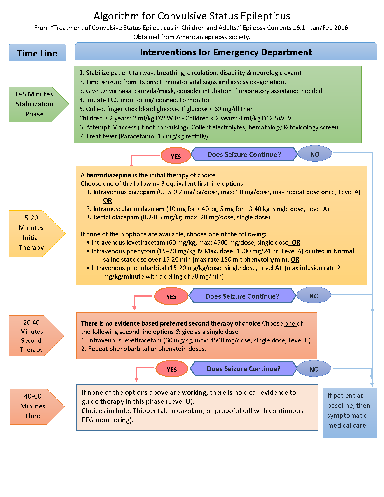

Seizure: Transient occurrence of signs and/or symptoms (mostly convulsions) resulting
from abnormal excessive or synchronous neuronal activity in the brain.
- Focality
- Focal (partial) seizures
- Generalized seizures
- Provoked Seizures:result from immediate recognizable stimulus or cause such as
electrolyte imbalance, meningitis, encephalitis, stroke, drug intoxications, brain tumor.
- Unprovoked seizure:
- seizure without recognizable stimulus
- Suggests the possibility of an underlying neurological disorder that may predispose a child to
recurrent seizures.
- Febrile seizures: seizures that occur between 6-60 months with a temperature of 38ᵒC or
higher, that are not the result of central nervous system infection or any metabolic imbalance.
- Simple febrile seizures: generalized seizures that lasted for less than 15 minutes and
did not recur within 24 hours.
- Complex febrile seizures: focal, prolonged (> 15 minutes), and/or recurrent within
24 hours.
- Status epilepticus: continuous seizure activity or recurrent seizure activity without
regaining of consciousness lasting for >30 min.
- Impending status epilepticus: seizures between 5 and 30 min.
- (Airway, Breathing, Circulation)
- Emergency cessation of seizure by medications (see algorithm below)
- IV access (two IV Fluids preferred)
- Oxygen especially if still convulsing
- Cardiac monitor
- Vital signs (including blood pressure)
- History taking
- Exclude conditions that mimic seizures
- Manage the predisposing factor (e.g., hypoglycemia)
- Is this a seizure or some other paroxysmal event?
- Is this the first seizure?
- Duration of fitting
- Treatment given
- Poison ingestion
- History of epilepsy
- Last meal
- Does the child have a current illness/fever?
- Known illnesses.
- What did it look like (movements, eye deviation)? focal or generalized
- History of previous seizures (family)?
- Any indications of trauma or abuse?
- Length of postictal state
- List current medications
- How was the child acting immediately before the seizure?
- History of developmental delay/recent loss of milestones?
- Chills
- Gastroesophageal reflux in infancy
- Breath-holding spells (18 mo.3 yr.)
- Syncope
- Cough syncope
- Migraine (confusional)
- Pseudoseizure (psychogenic seizure):
- Paroxysmal vertigo (toddler)
- Cardiogenic syncope
- Paroxysmal dyskinesias
- Night terrors (46 yr.)
- Rages (612 yr.)
- Tics/habit spasms
- Narcolepsy
- Myoclonus
- CBC
- Serum Glucose
- Sodium, potassium
- Calcium, Magnesium (in case of hypocalcemia)
- Urea and creatinine
- Liver enzymes (AST, ALT) (if liver injury suspected)
- Toxicology screen (if suspected)
- Anti-epileptic drug level (if on antiepileptics i.e., recurrent seizure)
Indications:
- Prolonged Seizure (Status Epilepticus)
- Focal neurological deficit
- Focal Onset seizure
- Suspicious of non-accidental trauma
- Bleeding disorders
- Predisposing history of CSF shunt, malignancy
Modality
- Brain MRI with contrast
- Head CT without contrast: Obtain a head CT only when concerned about a mass or bleed or
in an emergency situation
- Head ultrasound: may be used in early infancy and requires open fontanelles.
- Febrile seizures
- Complex febrile seizures
- Simple febrile seizures with developmental delay
- EEG should be done after 2 weeks from the febrile seizures
- Afebrile seizures
- Not recommended for all children with the first nonfebrile seizure
- All infants younger than 6 months of age
- Meningeal signs or symptoms
- Should be considered in febrile seizure in a child pretreated with antibiotics. (Antibiotics can mask
signs and symptoms of meningitis).
- Stabilize patient (airway, breathing, circulation, disability - neurologic exam)
- Time seizure from its onset, monitor vital signs
- Assess oxygenation, give oxygen via nasal cannula/mask, consider intubation if respiratory assistance
needed
- Initiate ECG monitoring
- Collect finger stick blood glucose. If glucose < 60 mg/dl then 2-4 ml/kg D10W IV
- Attempt IV access and collect electrolytes, hematology, toxicology screen, (if appropriate)
anticonvulsant drug levels
- Treat fever (Paracetamol 15 mg/kg rectally)
- A benzodiazepine is the initial therapy of choice (Level A):
- Choose one of the following first-line options with dosing and frequency:
- Intravenous diazepam (0.15-0.2 mg/kg/dose, max: 10 mg/dose, may repeat dose
once if the seizure continues after 5 minutes, Level A)
- Intramuscular midazolam (10 mg for > 40 kg, 5 mg for 13-40 kg, single dose,
Level A)
- Rectal diazepam (0.2-0.5 mg/kg, max: 20 mg/dose, single dose, Level B).
- If the first-line medications didn't abort the convulsions or about 10 minutes passed from the initial
management
- Intravenous Levetiracetam loading dose of 60 mg/kg (maximum 4500 mg) infused
over 15 minutes
- Intravenous phenytoin (1520 mg/kg IV Max. dose: 1500 mg/24 hr, Level A) diluted
in Normal saline stat dose over 15-20 min
- Intravenous phenobarbital (15-20 mg/kg/dose, single dose, Level A), (maximum
infusion rate 2 mg/kg per minute with a ceiling of 50 mg/min)
- If the first-line medications didn't abort the convulsions
- Repeat phenobarbital or phenytoin doses
- If none of the options above are working, there is no clear evidence to guide therapy in this
phase (Level U):
- Choices include: Midazolam, or Propofol (all with continuous EEG monitoring).
- No seizures for more than 24 hours
- No fever for febrile convulsions
- Primary cause of fever managed for febrile convulsions
- Normal vital signs for age
